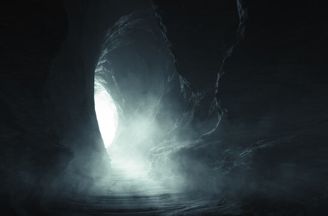

La Cueva Oculta
Entras a la cueva con tu linterna en mano. Es más profunda de lo que parecía desde afuera. Las paredes tienen marcas antiguas, pero lo que más llama tu atención está al fondo: suministros militares.
Municiones, raciones de combate, vendas, y más importante: un mapa detallado del interior de la base enemiga. Alguien estuvo preparando esto durante tiempo. Un agente aliado tuvo que haberlo dejado aquí como depósito de emergencia.
Con este mapa, el acceso a los archivos será mucho más fácil. Sabes exactamente por dónde entrar, qué pasillos evitar y dónde están los puntos ciegos de las cámaras.
Estado de la misión
Etapa 4 de 5: Suministros encontrados
Inventario de suministros encontrados
Mapa detallado de la base (actualizado hace 3 días según la fecha). Dos cargadores extra compatibles con tu arma. Raciones para 48 horas. Kit médico completo. Una radio de frecuencia cifrada. Y una nota que dice: "Si lees esto, la misión sigue adelante. Confía en el mapa. — Águila."